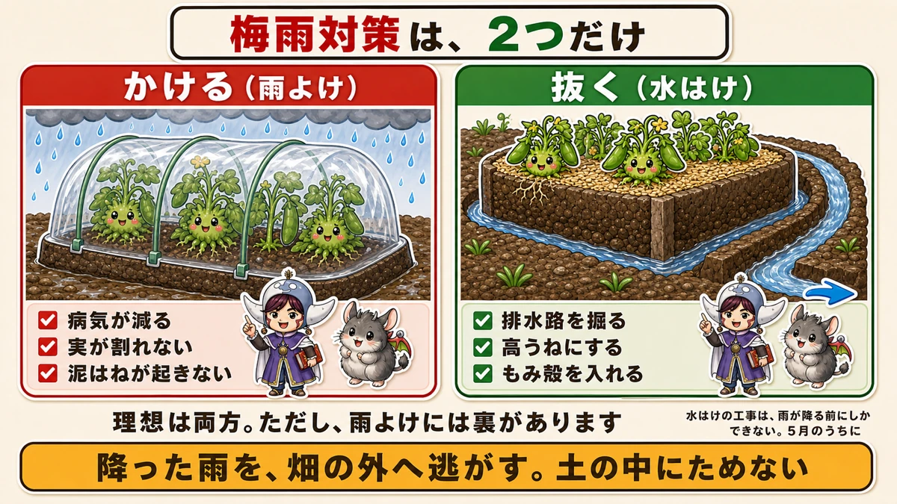
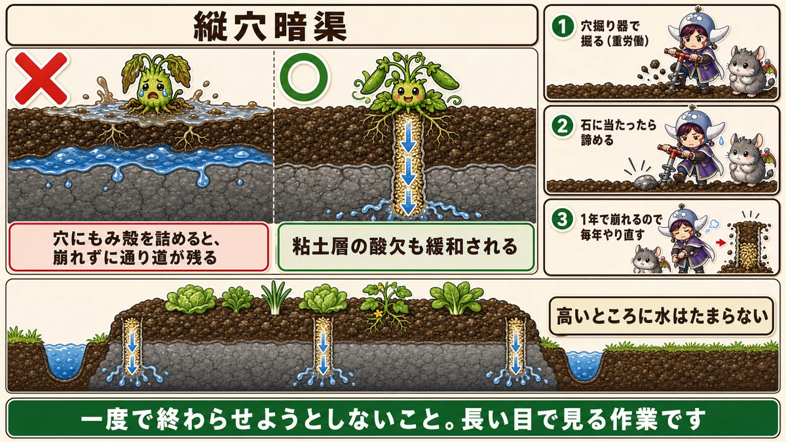
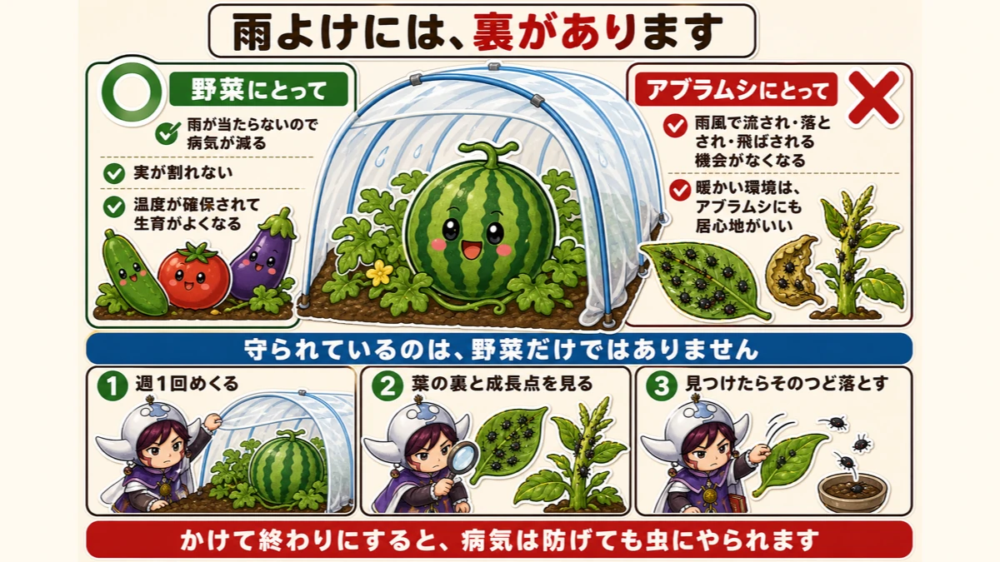
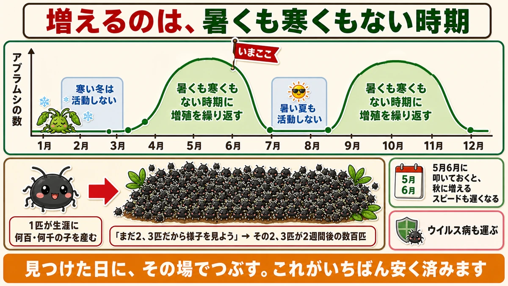

家庭菜園の梅雨対策｜排水・雨よけ・アブラムシを見直す段取り帳
どうも、8150（えいこう）です🌱 家庭菜園歴8年、理科の教員免許を持っていて、有機・無農薬で野菜を育てています。
📖 この記事の目次
この記事で分かること
- 梅雨の準備は『地面にたまる水を逃がす』『株に当たる雨を減らす』『覆いの中を点検する』の順で整理できます。
- 排水溝は、掘った深さよりも、その先に水の出口があるかを確認。高いうねだけで、畑全体の排水が解決するとは限りません。
- 雨よけは、雨による病気の広がりや果実の傷みを減らす手段です。晴天時の換気と、葉裏のアブラムシ確認を組み合わせます。
- しおれた株に、すぐ水や肥料を追加しません。土の湿り、雨よけ内の暑さ、虫の有無を見てから原因を絞ります。
- 畑、雨が入るプランター、屋根の下のプランターでは、水の入り方が違います。梅雨だから全員水やりなし、とは決めません。
- もみ殻の使い方や虫の除去方法には異なる説明があります。効果の条件と限界まで見て、今の場所に合う作業を選びます。
雨の日が続く前に、何から手をつければいいのか。雨よけを買うべきか、溝を掘るべきか、虫を探すべきか。作業の候補が多いと、それだけで週末が埋まってしまいそうですよね。
でも大丈夫。最初から全部をそろえる必要はありません。『水がどこから入り、どこへ出るか』を見れば、先に必要な作業が分かります。雨のあとの通路に水が残るなら排水から。排水は悪くないけれど葉や実が濡れ続けるなら雨よけを検討。すでに覆っている株なら、中の風通しと虫の確認から始めます。
8150（えいこう）です🌱 理科を教える立場からも、葉に出た変化と、地面や覆いの中の条件をつなげて考えるのが好きです。このページでは梅雨対策を、作業前に使う早見と、困ったときに戻れる診断に分けました。栽培している野菜の名前を全部覚えるより、まずは目の前の一株から見てみましょう。
雨よけは、屋根を設置した時点で完成ではありません。雨を防ぐことで、日差し、風、虫の入り方も変わります。野菜にうれしい変化が、虫にもうれしいことはあるんですよね。だから、設置する作業と、その後に開けて見る作業は一組です。
読む順番も自由でOKです。これから準備するみなさんは『早見』『作業の手順』へ。ぬかるみや葉の縮れが気になる場合は『失敗の見分け方』へ進んでください。どちらの場面でも、最後はカレンダーより実物で決めます。
早見：梅雨対策の時期と確認の目安
日付より、作業できる土と天候を目安にする
- 排水の大きな準備：長雨に入る前、草が通路を覆う前に進めます。春の早い時期から整える方法もあり、全国一律に「5月末が締め切り」とはしません。
- 雨のあとの溝点検：畑へ無理なく入れる状態になってから。水たまりの位置と、出口の詰まりを調べます。ぬかるんだ場所を歩き回るための点検にはしません。
- 梅雨の途中の土の管理：晴れ間があり、土を扱える状態なら、うね間の固まった部分をほぐす作業も候補になります。大きな工事と、通路の手入れを分けて考えます。
- 雨よけを使う対象：トマトやスイカなど、雨による傷みや病気が気になる株。野菜の性質と、今の症状に合わせて範囲を決めます。
- 雨よけの換気：雨が入る心配の少ない晴天時に、裾を開けて風の通り道を作ります。暑さがこもる状態を、保温の成功とは見ません。
- 虫の確認：畑へ行くたびに、覆いを開けて葉裏と新芽を見るのが基本です。「週1回見れば必ず間に合う」という間隔の保証はありません。
- 少数のアブラムシへの対応：見つけた時点で除去し、その後も同じ葉や近くの芽を点検します。小さい集まりのうちに対応できると、手間を抑えやすくなります。
- 季節の目安：春から初夏、秋の穏やかな気温では増えやすい説明があります。5〜6月、9〜11月は注意する時期の例ですが、地域や暖冬、覆いの有無で変わります。
- うねの高さ、溝の深さ、縦穴の間隔：この材料から共通の寸法は決められません。地形、水の出口、今ある根の位置を確認し、数字を寄せ集めた施工は避けます。
- もみ殻の投入量：畑全体に共通する量の指定はありません。混ぜる使い方と穴へ詰める使い方を分け、元の土の状態を見て検討します。
梅雨対策は特定の野菜を植える記事とは違うので、株間、元肥の量、収穫日数を一つの数字にはできません。すでに育てている株の計画をそのまま生かし、その周りの水と風を整える記事です。梅雨の準備という理由だけで、株を植え直したり、追肥の回数を増やしたりしなくて大丈夫です。
育てる場所ごとの入口
- 露地の畑：通路の水たまり、うねの周囲、畑の外への排水経路を見ます。雨が降った量だけでなく、その水が残る場所を確かめます。
- 雨よけをした畑：屋根の外から流れ込む水と、覆いの中の乾きや暑さを別々に点検します。葉が濡れていないことだけで根の環境を判断しません。
- 雨が当たるプランター：容器の排水穴と水の出口を確認。長雨で過湿になるなら、雨の入り方を減らせる置き場所を考えます。
- 屋根の下のプランター：天気予報に雨マークがあっても、土へ水が入っているとは限りません。表面と中の湿りを確かめて、水やりを判断します。
同じ庭でも、軒下の容器と、その横の露地では条件が違います。「今日は雨やから、水はいらんやろ」とまとめて判断すると、片方は濡れすぎ、片方は乾きすぎ、ということも起きます。場所を分けて見るだけで、迷いはかなり減りますよ。
準備前のチェック
- 前の雨で、どこに水が残ったか分かる
- 排水溝をたどると、水の出口まで確認できる
- うねを手直しする場合、育っている株の根を傷めない範囲が分かる
- 雨よけを開ける側へ、人が手を入れられる
- 水やりは天気だけでなく、土の湿りで決めることにした
ここまで確認できたら、次の章で実際の順番を組みます。道具を増やす前に、必要な作業を一つ選んでください。
作業の手順（時期の順）
1．雨が続く前に、水の流れを調べる
- 前回ぬかるんだ通路や、雨のあと水が引きにくかった場所を思い出し、畑の位置と結びつけます。
- うねの外周から出口まで、排水の経路を順に見ます。途中で草や土に塞がれていないか確認します。
- 葉に雨が当たる場所と、地面へ水が流れ込む場所を分けて見ます。
- 『通路の整備』『植える前のうねづくり』『すでにある雨よけの点検』のどれを先にするか決めます。

雨を上から避ける方法と、降った水を地面から逃がす方法は、担当する場所が違います。屋根をつけても、周囲から水が入れば根の周りは湿ります。逆に、地面の水が引いても葉へ雨は当たります。まず二つを分けておくと、対策の抜けを見つけやすくなります。
排水経路は、目立つ溝だけを見て終わらせないのがコツです。畑の中ではつながっているようでも、通路の端で止まっていれば、その先へ水は移動できません。出口が確認できない場合は、溝を深くする前に、どこへ出せるのかを調べます。
借りている畑では、共有の通路や排水路の決まりも確認してください。自分の区画だけから水を出しても、行き先の区画を水びたしにしては困ります。すでにある排水の仕組みに、区画の水をどうつなぐかが先です。
2．通路と出口を整え、植える前ならうねの高さを考える
- 土を扱える日に、排水経路を塞ぐ草や崩れた土を取り除きます。
- うねの外側と通路の水が、出口へ向かえる状態か確かめます。
- これから植える場所は、水が残る程度を見て高いうねを検討します。
- すでに株が育っている場所では、大きく土を動かさず、根から離れた通路側の整備を優先します。
- 次の雨のあと、整えた場所に水が残ったかを見直します。
高いうねは、根のある場所を周囲より上げる考え方です。通路に流れた水が外へ出られるなら、うねと排水路を組み合わせやすくなります。ただし、高く盛った土の下まで水が滞っている場所では、うねの形だけで解決するとは限りません。
高さを何cmにするかより、何のために高くするかを先に考えてください。すでにトマトが根を張っている場所を、今から新しい高うねへ作り替えるのは、植え付け前の作業とは別物です。根を傷めれば、排水の改善を待つ前に株が弱ってしまいます。
雨の直後に、土が粘って足へまとわりつく状態なら、大きな作業は待ちます。歩く場所を増やすほど土を押し固めやすく、掘る作業も進めにくいからです。梅雨に入ったら全部手遅れ、と焦らなくて大丈夫。晴れ間に、土が扱えるかを確かめてから再開します。
3．もみ殻は、混ぜる目的と詰める目的を分ける
- 元の土が硬く締まっているのか、出口が詰まっているのかを先に確かめます。
- 土へ混ぜて構造を変えたい場合と、縦穴の中に通り道を残したい場合を区別します。
- 土へ混ぜるなら、分解しにくい性質と、乾き方が変わる可能性も考えます。
- 生育中の株の根元へ一気に入れる作業にせず、土づくりの段階で検討します。
- 入れた場所と使い方を記録し、その後の湿りと生育を観察します。
もみ殻は米の外側の殻で、形が残りやすい資材です。土に混ぜる方法では、土の粒の間に隙間を作ることをねらいます。一方、穴へ詰める方法では、掘った部分を何もない空洞のままにしないために使います。同じものでも、役目は一緒ではないんですよね。
だから、縦穴の施工例を見て、同じ量を畑全体へ広げるような使い方はしません。材料には、どんな土にも当てはまる投入量はありません。雨の多い時期に水を逃がしたいことと、晴れが続く時期にも湿りを保ちたいことは、両方考える必要があります。
窒素が足りなくなるかどうかは、後ろの『説明が分かれていること』で整理します。先に一つだけ。高いうねにすれば窒素の問題も消える、という組み合わせにはしません。水の管理と養分の管理は、つながりがあっても別々に確かめる項目です。
4．縦穴暗渠は、地面の条件を確認してから候補にする
- 表面の溝と出口を整えても、同じ場所で水が引きにくいか確認します。
- 下に水が抜けにくい層があるか、畑の履歴や土の状態を調べます。
- 縦に穴を設ける方法が、その場所の排水経路につながるか検討します。
- 実施する場合は、穴掘り器を無理に押し込まず、石などの障害に当たったら作業を止めます。
- 穴にもみ殻を詰める施工を選んだ場合も、雨のあとに効果を確認し、維持が必要か見直します。

縦穴暗渠は、地面の中に縦方向の水の通り道を作る方法です。暗渠という言葉は、地中の排水の仕組みを指します。図は考え方をつかむために使い、穴の寸法や本数を決める設計図にはしないでください。
ぬかるみが改善した施工例はあります。ただ、その場所では外側の排水路や高いうねも組み合わせています。穴だけの効果を切り出して「ここへ一つ掘れば解決」とは言えません。下へ水を逃がす先があることも必要です。
下まで水が高くたまっている場所や、出口そのものが機能していない場所では、縦穴を深くするだけの作業は見直します。水の出口が違う問題を、穴の深さで埋め合わせようとしない、という考え方です。
手作業での穴掘りは負担があります。石へぶつかっているのに力で進めると、道具を傷めることもあります。「もうちょっとで抜けるはず」と粘りたくなるけど、ここは止まってOKです。施工例にある重労働まで、そのままみなさんの標準作業にしなくて大丈夫。
時間がたって穴が崩れ、繰り返し整備した例もあります。毎年必ず同じ数を掘るという規則ではなく、水の残り方を見て維持を考える方法として受け取ってください。
5．雨よけは、開けて管理できる形で設置する
- どの株の、どの雨の影響を減らしたいか決めます。
- アーチとビニールを使う場合は、葉や実を保護する範囲を確認します。
- 裾を開けられる側と、葉裏へ手を入れられる場所を確保します。
- 雨が当たる日と、晴れた日に開ける状態をそれぞれ確認します。
- 覆いの外へ落ちる水が、株元へ集まっていないかも点検します。
雨よけを使う目的は、株を密閉することではありません。雨を減らしたいだけなのに、風まで止めてしまうと、晴れた日には暑さがこもります。低い気温のときに役立つ保温と、高温になったときの換気は、天候に合わせて切り替えます。
トマトでは雨に伴う果実の傷み、スイカでは雨水を通じて広がる病気への対策が候補になります。どちらも、全部の病気を消せるという意味ではありません。すでに感染した株を治す働きと、これから雨で広がる機会を減らす働きは分けます。
背の高いトマトに使う雨よけと、スイカの株元を覆う方法では、守る範囲も変わります。同じ形を全作物へ当てるより、葉、実、株元のどこを濡らしたくないかを考えてください。雨よけの外へ伸びた葉まで、屋根の下と同じ条件にはなりません。
6．晴れ間には換気し、葉を傷つける作業をまとめる
- 雨が吹き込む心配の少ない日は、覆いの裾を開けます。
- 中の空気がこもっていないか、葉の状態とあわせて見ます。
- 芽かきや傷んだ下葉の整理は、葉が乾く条件を選びます。
- 土に近い葉、雨で泥がついた葉を調べ、必要な部分だけ手入れします。
- 作業に使った手や道具を清潔にし、傷んだ株から別の株へ続けて触らないようにします。
雨の中で葉を切る作業は、濡れた傷口を残しやすくなります。晴れ間に回せる作業なら、天気と組み合わせた方が管理しやすいです。とはいえ、晴れたからと一度に葉を大量に取る必要はありません。地面との距離を作ることと、株に必要な葉を残すことを両立します。
泥が葉へ飛びつくのを減らす管理と、道具を介した広がりを避ける管理は、別の経路への対応です。雨よけだけで作業中の扱いまで解決した気にならないよう、切る場所と触る順番も確認します。
7．畑へ行ったら、覆いの中の虫を先に見る
- 雨よけを開け、上から見える葉だけでなく裏側も調べます。
- 新しい葉が集まる先端と、縮れた葉の内側を確認します。
- アブラムシが少数でも見つかれば、その場で除去します。
- 同じ株の別の芽や、隣の株も見て、発生が一か所か確認します。
- 除去した場所を覚えておき、次の点検で残りや再付着を見ます。

覆いの中では、雨や風にさらされる機会が減ります。形によっては、アブラムシを食べる天敵も入りにくくなります。野菜の葉がきれいに保たれていても、葉裏まで虫がいないとは限りません。屋根の外から眺めるだけの確認は、ここで卒業です☺️
少数なら指などで取り除く方法、水で落とす方法があります。いずれも、その瞬間に減ったことと、あとから戻らないことは別です。水で落とした後は、葉裏をもう一度見ます。水やりとは目的が違うので、虫を取るために土まで繰り返しびしょびしょにする使い方にはしません。
天敵がいる場合は、アブラムシと見分けて扱ってください。テントウムシなどは、虫を減らす側の生きものです。動いているものを全部取るより、何がいるかを一度見る。理科の観察みたいですけど、この一手間が管理にもつながります。
8．梅雨の途中は、場所ごとに水やりを判断する
- 雨が土へ直接入っているかを確認します。
- 表面だけでなく、根の周りが乾いているか、湿りが残っているかを見ます。
- 湿った畑には、いつもの習慣で追加の水を入れません。
- 雨が届かない容器や、乾燥している場所では必要な水を補います。
- 雨が当たる容器は、排水穴や出口を塞いでいないか確認します。
里芋や生姜など、乾燥が続けば水を補う必要がある作物もあります。ただ、それも「水を好むから、土に水が残っていても足す」という意味ではありません。作物の性質と、その日の土を組み合わせて決めます。
畑へ行く前に『今日は水やりの日』と決めるより、『今日は土を見て決める日』に変えてみてください。梅雨の水管理では、この順番がかなり助けになります。
失敗の見分け方（症状→原因→やること）
雨のあと、通路の水が引かない
- 症状：同じ場所に水が残り、靴が沈みやすい。雨がやんでも作業場所がぬかるみます。
- 考えられる原因：出口の詰まり、通路の土の締まり、地中の水が抜けにくい層、周囲からの流入などです。
- やること：安全に見られる場所から水の経路を調べます。土を扱える状態になったら、出口と通路を先に整えます。
表面だけを見て「下は全部粘土やな」と決めないことが大切です。水が残る理由は一つではありません。外から流れ込む量が多い場所と、出口が草で塞がれた場所では、先に行う作業が変わります。
水たまりのすぐ横へ、行き先のない溝を追加しても、たまる場所を移しただけになることがあります。水が減ったかを判断するには、掘った直後の形より、次の雨のあとの残り方を見てください。改善した場所と残った場所を分ければ、次に直す位置も絞れます。
地面が濡れているのに、葉がしおれる
- 症状：雨が続いたあと、葉に張りがない。土には湿りがあり、水不足には見えません。
- 考えられる原因：過湿で根の働きが低下している、根や土に関わる病気がある、覆いの中が暑くなっているなどです。
- やること：水を追加する前に、土の湿りと排水を確認します。覆いのある株は中の暑さも見ます。戻らない株は病気を含めて調べます。
葉が垂れると、つい水を持っていきたくなりますよね。でも、根の周りに水が多いことと、葉まで水を取り込めることは同じではありません。湿った土にさらに水を足すと、原因へ近づくどころか、濡れた状態を長引かせることがあります。
朝と日中で様子が違うか、株全体か一部の枝か、近くの株にも出ているかを見ます。この観察は、病名をその場で確定するためではなく、原因を調べる手がかりを増やすためです。しおれだけで根腐れや特定の病気と断定しません。
一株だけが急に弱り、乾きや暑さを見直しても戻らないなら、肥料不足の一言で片づけず、作物名と症状を合わせて確認してください。健康な株と同じ手や道具で扱い続けないことも、次の被害を減らす管理になります。
雨よけをした株だけ、晴れた日にぐったりする
- 症状：覆いの内側が暑く感じられ、晴天時に葉が垂れます。
- 考えられる原因：閉めた裾による熱のこもり、風の不足、土の乾きなどです。
- やること：雨が入らない条件なら裾を開け、空気を動かします。そのうえで土の湿りを確認し、水が必要か決めます。
保温は、寒いときに株を守る働きです。気温が上がっても同じ形で閉じ続ければよい、という説明ではありません。雨がやんだ後も覆いをそのままにしていないか、見直してください。
換気で葉の状態が変わるか、水を補ったあと変わるか、別々に観察すると原因を考えやすくなります。思いついた対策を全部同時にすると、何が効いたか分からなくなります。まずは明らかにこもった空気を逃がし、次に地面を見る順です。
新しい葉が縮れ、裏側に小さな虫が集まる
- 症状：葉が巻いたり、芽の伸びが弱くなったりし、裏や先端に虫の集まりがあります。
- 考えられる原因：アブラムシによる吸汁が候補です。ただし葉の縮れだけでは、虫が原因かどうか確定できません。
- やること：葉裏と芽を開いて、虫を実際に確認します。見つけたものを除去し、近くの葉や株も点検します。
外側から見えている縮れは、発生場所を探す手がかりです。縮れた葉だけを見ると、その隣のまだ平らな新芽についた虫を見逃すことがあります。『症状がある葉』『その周囲の芽』を一緒に見ると、広がりをつかみやすくなります。
虫の数が減ったあと、古い葉の形がすぐ元へ戻るとは限りません。除去の効果を見るときは、残った虫と、新しく伸びる部分の様子も確認します。葉の形だけで「取っても意味なかった」と決めず、何を見て判断するかを分けましょう。
虫を取ったはずなのに、また同じ場所へ集まる
- 症状：除去直後は少なく見えますが、次の点検で再び虫が見つかります。
- 考えられる原因：取り残し、落とした虫の再付着、別の場所からの侵入、周囲の株に残る発生源などです。
- やること：同じ葉の裏を再点検し、新芽と隣の株へ確認を広げます。除去方法の見直しと換気を組み合わせます。
水で落とす方法は、見える場所の数を減らすために使えます。ただ、地面に落ちたことまで含めて、全部死んだと考える方法ではありません。取り残しもあり得るので、再確認を作業の最後に入れます。
予防の資材があるから虫はもう来ない、という判断も避けます。すでについた虫を減らす作業と、新しく入る虫を抑える工夫は、役目が違います。見つけた集まりはそのままにせず、まず実物へ対応してください。
覆っているのに、葉に泥や斑点が出る
- 症状：地面に近い葉が汚れたり、覆いの内側でも葉に傷みが見られたりします。
- 考えられる原因：横からの雨、覆いの外からの泥はね、すでにある感染、湿った環境や作業中の扱いなどです。
- やること：雨の入り方と葉の位置を確認し、傷んだ場所を観察します。斑点だけで病名を決めず、作物ごとの症状と照らし合わせます。
屋根は、上からの雨を減らす道具です。横から吹き込む雨、外へ伸びた葉、過湿の土までは同じように守れません。覆いがあるという一つの情報で、病気の候補を全部外さないようにします。
アブラムシが運ぶウイルスと、雨水の飛散で広がる病原体も分けます。対策を増やす前に、葉が濡れた経路、虫がいるか、傷みが広がる場所を見てください。異常が続く株は、他の株と分けて扱いながら、診断できる情報をそろえます。
梅雨なのに、軒下のプランターだけ乾く
- 症状：雨の日が続いていても、屋根の下の容器の土は乾き、葉の張りが落ちます。
- 考えられる原因：雨が容器へ入っていないため、いつもの水やりを止めた分だけ乾燥している可能性があります。
- やること：土の中の湿りを確認し、必要なら水を与えます。雨の当たる容器とは管理を分けます。
天気予報の雨量と、容器に入る水の量は同じではありません。屋根が広い場所なら、雨の多い日でも容器にはほとんど届かないことがあります。逆に風向きが変われば吹き込む日もあります。置き場所の名前より、その日の実際の濡れ方を見ましょう。
容器の土が濡れ続け、下から水が出にくい
- 症状：プランターへ雨が入るのに、土が乾かず、排水が進みにくい様子があります。
- 考えられる原因：排水穴や容器の下の出口の詰まり、置き方による水の滞留、雨の入りすぎなどです。
- やること：底の出口を確認し、長雨を受け続ける場合は置き場所も見直します。根を傷めるほど土を掘り返す前に、容器の外から確認します。
ここでは、畑のように通路の溝を掘る方法は使えません。容器にある出口を働かせるのが先です。育てる場所が違えば対策も変わりますが、『入る水』『残る水』『出る水』を分ける考え方は共通です。
説明が分かれていること
排水の準備は、梅雨前だけか、梅雨中にもできるか
- Aという説明：草が茂り、雨で土を扱いにくくなる前に、排水路やうねの基礎を作ります。
- Bという説明：梅雨の途中でも、天気のよい日に、うね間の硬くなった土をほぐして通気と乾燥を助けます。
- どう考えればよいか：大きな準備を早めに済ませることと、途中の手入れを行うことは両立します。違う規模の作業として予定に入れます。
前もって整備しておく利点は、雨を待たずに作業日を選べることです。一方、梅雨入りしたという暦だけで、今からの作業を全部あきらめる必要はありません。今の土を触れるか、根を傷つけず作業できるかで判断します。
「遅かったから何もできない」と「濡れた土へ無理に入る」の間に、晴れ間を待って通路を整える選択肢があります。準備と維持を分ければ、今からできることが残ります。
寒い季節は減るのか、冬にも発生するのか
- Aという説明：寒い冬や暑い夏には、アブラムシの活動や被害が少なくなるとします。
- Bという説明：一般地では主に4〜11月でも、暖かい年は12月にも発生するとし、冬の葉裏や覆いの近くの確認も求めます。
- どう考えればよいか：季節の名前ではなく、気温、場所、作物、覆いの有無をそろえて考えます。活動が減ることを、いなくなることへ言い換えません。

年間の図は、春と秋に警戒する時期をつかむための目安です。夏や冬の欄を「点検しなくてよい期間」と読む図にはしません。屋根のある場所、暖かい冬、残った葉の裏などでは、暦の印象と実物が違うことがあります。
春に虫を減らすことは、被害を早い段階で抑える管理になります。ただし、春の除去だけで秋の発生量を決められるわけではありません。秋にも外から虫が入ることや、その時の株の状態を考え、点検を再開します。
水で虫を落とす方法と、再び戻る問題
- Aという説明：水を使ってアブラムシを物理的に洗い落とす方法があります。
- Bという説明：落とした虫がまた上がってくることがあるため、弱い粘着のテープで取り除く方法をすすめる説明もあります。
- どう考えればよいか：今いる虫を減らす効果と、再付着を防ぐ効果を分けて見ます。方法を選んだ後の確認を省きません。
水で落とすなら、葉や芽を傷める強さにしないこと、土へ余分な水を入れすぎないことを考えます。テープを使うなら、葉へ強く貼りつくものは傷の原因になります。虫だけを取る作業にしたいのに、葉まで傷めては困りますよね。
どちらにも向く場面と扱いにくい場面があります。広い範囲で増えた株と、芽の先に少数見つかった株を、同じ手間で処理できるとは限りません。見つけた場所、葉の弱さ、取り残しを見て選びます。
反射する資材は役立つか、期待は控えめか
- Aという説明：シルバーマルチなどの反射を、虫の飛来を抑える工夫として使います。
- Bという説明：同じような反射資材を使っていても発生はあるため、完全な防除は期待せず補助とします。
- どう考えればよいか：予防の工夫として検討できても、葉についた虫を見なくてよい根拠にはしません。
反射によって入りにくくするねらいと、今いる集まりを減らす作業は別です。資材を置いたあとも虫が見つかれば、まずその虫へ対応します。「これを使ってるのに、なんでおるん」と考える時間より、葉裏を見て取り除く方が、今の被害には直接つながります。
防虫ネットについても、設置前の苗を確認する説明があります。すでについていた虫まで、ネットをかければ消えるわけではありません。雨よけ、反射資材、ネットは、それぞれ減らしたい経路が違います。種類を増やすだけで安心せず、中の点検を続けます。
もみ殻と窒素不足の説明
- Aという説明：もみ殻に関して、窒素飢餓が起きる説を留保しつつ、高いうねを組み合わせる施工例があります。
- Bという説明：土の微生物の状態、投入量、追加する資材などによって違いがあるとして、窒素を補う説明や、不要とする意見が紹介されています。
- どう考えればよいか：もみ殻を入れれば必ず不足する、入れても必ず問題ない、のどちらにも統一しません。元の土と投入条件を含めて判断します。
窒素飢餓は、土の中で有機物の分解が進む際に、微生物が窒素を使い、作物が利用できる窒素が不足する状態を指します。どれだけ起きるかは条件によるため、字幕の成分計算を切り出して、そのまま家庭菜園の追加肥料の量にはできません。
高いうねにする理由は排水を考えるためです。高くしたら根が殻へ触れなくなり、窒素の問題が解消する、という因果までは材料にありません。葉の色が薄い場合も、養分だけでなく、過湿による根の不調を先に確認します。
1週間でどれくらい増えるのか
- Aという説明：動画の増殖の説明に、1週間で量が3〜5倍ほどになるという表現があります。
- Bという説明：別の動画では、集まりの広がりを10〜100倍ほどと表す場面があります。
- どう考えればよいか：数、量、広がりの面積がそろった比較ではありません。『1週間で3〜100倍』という一つの繁殖率にはまとめません。
増え方の数字を見たら、まず何を数えた数字なのかを確認します。葉一枚にいる個体数なのか、集まりが覆う場所なのか。温度、虫の種類、株の状態が違えば、同じ期間でも結果は変わります。
ここから実用として持ち帰るのは、正確な未来の匹数ではなく、少ないうちの確認と除去です。「何日後に何匹」と予測して待つより、今日見つかった集まりへ対応してください。
残った枝葉を土へ使うか、畑から取り除くか
- Aという説明：収穫後の枝葉を、条件を整えて土づくりへ活用する方法があります。
- Bという説明：アブラムシがついた葉などを残すと、虫の居場所を維持することがあるため、片づけを求めます。
- どう考えればよいか：使える植物の残りと、虫や病気を抱えた残りを分けます。何でもその場へ戻す一つの手順にはしません。
自然のものだから全部安全、とは判断しません。使う前に、虫が残っていないか、病気の疑いがないかを見ます。この章で比べたのは、同じ目的に見える説明の条件です。どちらかを勝ち負けにするより、自分の畑で条件をそろえる方が、次の作業へつながるかなと思います。
よくある質問
全部の野菜へ雨よけが必要ですか
すべてへ同じ覆いを設ける必要はありません。雨で出やすい傷み、株の性質、今ある排水を見て対象を選びます。地面に水が残る問題は、雨よけだけで片づけず、出口の整備も確認してください。
雨よけをかければ、トマトの実は割れませんか
雨に伴う果実の傷みを減らす対策になりますが、割れをゼロにする保証ではありません。覆いの外から根へ水が入ることもあります。屋根の有無だけで判断せず、土の湿りの変化も見ます。
5月を過ぎてしまったら、排水対策は遅いですか
暦だけで遅いと決めなくて大丈夫です。大きな準備は長雨の前が進めやすい一方、梅雨の晴れ間にも通路を整える方法があります。ぬかるんだ土へ無理に入らず、扱える状態を待ちます。
高いうねなら、排水溝はなくてもよいですか
うねから移った水がどこへ行くかを確認してください。周囲の通路に残れば、畑全体の排水は改善していないことがあります。根の位置を上げる工夫と、外へ出す経路は組み合わせて考えます。
縦穴は、深いほど効きますか
深さだけで効果は決まりません。抜けにくい層と、水が移動できる先を確認する必要があります。この材料には共通の深さの指定がないため、施工例の言い回しから数値を作って掘ることはしません。
もみ殻と、焼いたもみ殻は同じものですか
この記事の施工例で扱うのは、もみ殻です。焼いた資材まで同じ性質、同じ投入量として置き換える説明にはしていません。手元の袋の表示を見て、種類を確認してから別途判断してください。
雨よけの中は、閉めた方が病気を防げますか
密閉するほどよいわけではありません。晴れた日は裾を開け、こもった熱や空気を逃がします。雨を避けたいことと、風を通したいことの両方を満たす管理を目指します。
畑には週末しか行けません。虫の点検は週1回で十分ですか
その間隔で被害を防げるとは約束できません。行けた日は覆いを開け、新芽と葉裏を必ず確認します。点検できる回数が限られるなら、管理しきれる数と、虫を見つけやすい配置も考えます。
アブラムシが数匹なら、次回まで待ってよいですか
少数のときに除去する方が、手作業で対応しやすいです。増え方は条件によるので、少ないから安全という待ち方にはしません。見つけた部分を処理し、近くの芽にも確認を広げます。
テントウムシがいれば、虫取りをやめてよいですか
天敵がいるのは、虫を減らす助けになります。ただし、畑全体のアブラムシを管理できているとは限りません。天敵を一緒に取り除かないよう見分けながら、発生場所と株の状態を確認します。
虫を減らせば、ウイルス病も治りますか
虫の除去は、吸汁被害や媒介の機会を減らすための管理です。すでに感染した株を治療する作業とは違います。疑わしい株は症状を確認し、診断に合う扱いを選びます。
梅雨は水やりを止めてよいですか
土に水が入っている場所では、過湿に注意して追加を控えます。雨が届かない軒下や乾いた容器では、必要になることがあります。天気の名前ではなく、根の周りの湿りで判断してください。
しおれたので、追肥を増やしてもよいですか
先に土の湿り、排水、虫、覆いの中の暑さを確認します。根が不調な状態で養分だけを足しても、原因への対応にはなりません。追肥は、元からの栽培計画と株の状態を合わせて決めます。
家にある食品を薄めて、虫へかけてもよいですか
このページでは、自作液の散布方法はすすめません。材料には個別の実践があっても、全作物での効果や安全を確定できないためです。まずは換気、実物の確認、少数のうちの物理的な除去から進めます。
学ぶ：雨・根・虫のつながり🔬
まとめ
トンネルビニール（雨よけ）
上だけかけて、横は開けます。閉め切ると温度と湿度が上がって、かえって病気が出ます。
![[商品価格に関しましては、リンクが作成された時点と現時点で情報が変更されている場合がございます。]](https://hbb.afl.rakuten.co.jp/hgb/56bc237a.e97551b1.56bc237b.2513ed10/?me_id=1310260&item_id=10001120&pc=https%3A%2F%2Fthumbnail.image.rakuten.co.jp%2F%400_mall%2Fdiokasei%2Fcabinet%2F010maruti-bini-ru%2Fbini-ruopri%2F413190.jpg%3F_ex%3D240x240&s=240x240&t=picttext "[商品価格に関しましては、リンクが作成された時点と現時点で情報が変更されている場合がございます。]")

防虫シルバーマルチ
雨よけで増えるアブラムシへの対策です。光で寄せつけません。
![[商品価格に関しましては、リンクが作成された時点と現時点で情報が変更されている場合がございます。]](https://hbb.afl.rakuten.co.jp/hgb/55e77bb2.a973bab2.55e77bb3.28befe28/?me_id=1223148&item_id=10001699&pc=https%3A%2F%2Fthumbnail.image.rakuten.co.jp%2F%400_mall%2Fideshokai%2Fcabinet%2Fam425.jpg%3F_ex%3D240x240&s=240x240&t=picttext "[商品価格に関しましては、リンクが作成された時点と現時点で情報が変更されている場合がございます。]")
くん炭（もみ殻）
水はけの改善に。うねを高くするのと合わせて効きます。
![[商品価格に関しましては、リンクが作成された時点と現時点で情報が変更されている場合がございます。]](https://hbb.afl.rakuten.co.jp/hgb/56bc30bc.01c5b89d.56bc30bd.ee310357/?me_id=1231595&item_id=10000412&pc=https%3A%2F%2Fthumbnail.image.rakuten.co.jp%2F%400_mall%2Fplanto-iwa%2Fcabinet%2F2707.jpg%3F_ex%3D240x240&s=240x240&t=picttext "[商品価格に関しましては、リンクが作成された時点と現時点で情報が変更されている場合がございます。]")
マルチ押さえピン
梅雨の風でビニールはめくれます。数は多めに。

あわせて読みたい